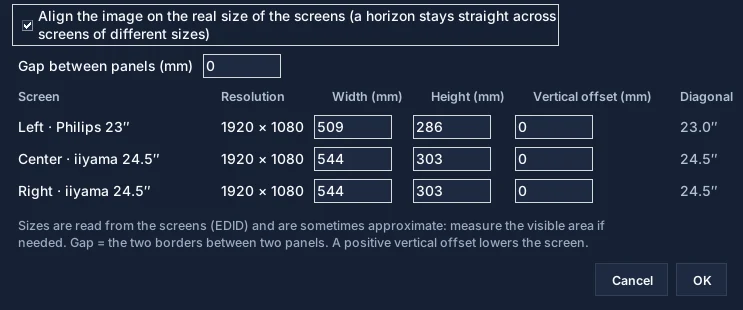

Add images
“Add images” button or drag and drop. Phone photos are turned upright.
The interface is built around a simpler editing loop: import, arrange, scale, reorder, preview, and apply.
From photo folder to desktop in five steps.
“Add images” button or drag and drop. Phone photos are turned upright.
Six layouts, including maximum optimization. Variants… suggests four other arrangements.
Fit keeps every image whole; Fill covers the screens by cropping around faces.
Move, Scale, Crop, layers, rotation and adjustments. Ctrl+Z undoes.
“Apply wallpaper” splits the composition and applies it screen by screen.
Four areas, top to bottom and left to right.
The toolbar holds what you use all the time; everything else is in the File, Image, Screens and Language menus.

What each screen will show, before you apply.
The Preview tab draws your screens as they sit on your desk, with their name: “Left · Philips 23″”, “Center · iiyama 24.5″”…

So a line stays straight across screens of different sizes.
Screens menu › Real screen size… Tick the box: WallCraft places screens by their physical size, read from the display (EDID).

Download the app or jump into specific desk setups.
Full WallCraft Pro guide: add images, layouts, Fit or Fill, mouse editing, variants, preview, real screen size, automatic wallpaper and shortcuts.
WallCraft Pro 2026.11.13 lines up one image across screens of different physical sizes, fills screens with face-aware cropping, keeps your wallpaper when you dock or undock, and rotates images automatically.
Explore WallCraft Pro use cases for dual monitors, triple screens, laptop plus external displays, ultrawide setups, and mixed monitor sizes.
Create a dual monitor wallpaper on Windows 11 without cropping or distortion, even when the monitors have different sizes or alignments.
Read the WallCraft Pro FAQ about cropping, mixed monitor sizes, Windows support, split export, open source access, and download state.
Download the current build, test your monitor layout, and keep the GitHub repository nearby for updates and source code.